library(tidyverse)
library(palmerpenguins)
library(ggthemes)Data visualization
Prerequisites
1.2 First steps
- Variable
- a quantity, quality, or property that you can measure
- Value
- the state of a variable when measured. May change from measurement to measurement
- Observation
- set of measurements under similar conditions. Will contain several values, each for a different variable. Sometimes also referred to as “data point”
- Tabular data
- set of values, associated with a variable and an observation. It is tidy if: Each value is in its own cell. Each variable has its own column. Each observation has its own row
[Why now attributes, when we just now learned of variables]
Check out the penguins tibble:
# Variation 1
penguins# A tibble: 344 × 8
species island bill_length_mm bill_depth_mm flipper_length_mm body_mass_g
<fct> <fct> <dbl> <dbl> <int> <int>
1 Adelie Torgersen 39.1 18.7 181 3750
2 Adelie Torgersen 39.5 17.4 186 3800
3 Adelie Torgersen 40.3 18 195 3250
4 Adelie Torgersen NA NA NA NA
5 Adelie Torgersen 36.7 19.3 193 3450
6 Adelie Torgersen 39.3 20.6 190 3650
7 Adelie Torgersen 38.9 17.8 181 3625
8 Adelie Torgersen 39.2 19.6 195 4675
9 Adelie Torgersen 34.1 18.1 193 3475
10 Adelie Torgersen 42 20.2 190 4250
# ℹ 334 more rows
# ℹ 2 more variables: sex <fct>, year <int># Variation 2
glimpse(penguins)Rows: 344
Columns: 8
$ species <fct> Adelie, Adelie, Adelie, Adelie, Adelie, Adelie, Adel…
$ island <fct> Torgersen, Torgersen, Torgersen, Torgersen, Torgerse…
$ bill_length_mm <dbl> 39.1, 39.5, 40.3, NA, 36.7, 39.3, 38.9, 39.2, 34.1, …
$ bill_depth_mm <dbl> 18.7, 17.4, 18.0, NA, 19.3, 20.6, 17.8, 19.6, 18.1, …
$ flipper_length_mm <int> 181, 186, 195, NA, 193, 190, 181, 195, 193, 190, 186…
$ body_mass_g <int> 3750, 3800, 3250, NA, 3450, 3650, 3625, 4675, 3475, …
$ sex <fct> male, female, female, NA, female, male, female, male…
$ year <int> 2007, 2007, 2007, 2007, 2007, 2007, 2007, 2007, 2007…# Variation 3
View(penguins)
# and also run the help page
?penguinsHelp on topic 'penguins' was found in the following packages:
Package Library
palmerpenguins /home/max/R/x86_64-pc-linux-gnu-library/4.5
datasets /usr/lib/R/library
Using the first match ...1.2.3 Creating a ggplot
# make an empty canvas
ggplot(data = penguins)
# map flipper_length_mm and body_mass_g to the axis
ggplot(
data = penguins,
mapping = aes(x = flipper_length_mm, y = body_mass_g)
)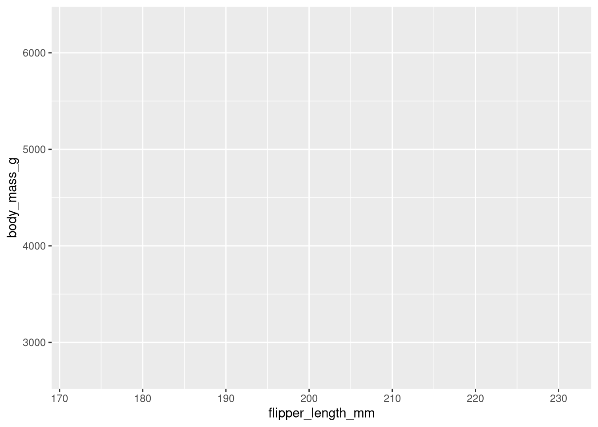
# add a geom to display the single observations
ggplot(
data = penguins,
mapping = aes(x = flipper_length_mm, y = body_mass_g)
) +
geom_point()Warning: Removed 2 rows containing missing values or values outside the scale range
(`geom_point()`).
1.2.4 Adding aesthetics and layers
[“To achieve this, will we need to modify the aesthetic or the geom? If you guessed “in the aesthetic mapping, inside of aes()”, you’re already getting the hang of creating data visualizations with ggplot2! And if not, don’t worry.”]
> This question is somewhat misleading compared to the answer. I 'only' guessed aesthetic, and felt demotivated after reading the more specific answer.Same plot, but this time with points colored by species:
ggplot(
data = penguins,
mapping = aes(x = flipper_length_mm, y = body_mass_g, color = species)
) +
geom_point()Warning: Removed 2 rows containing missing values or values outside the scale range
(`geom_point()`).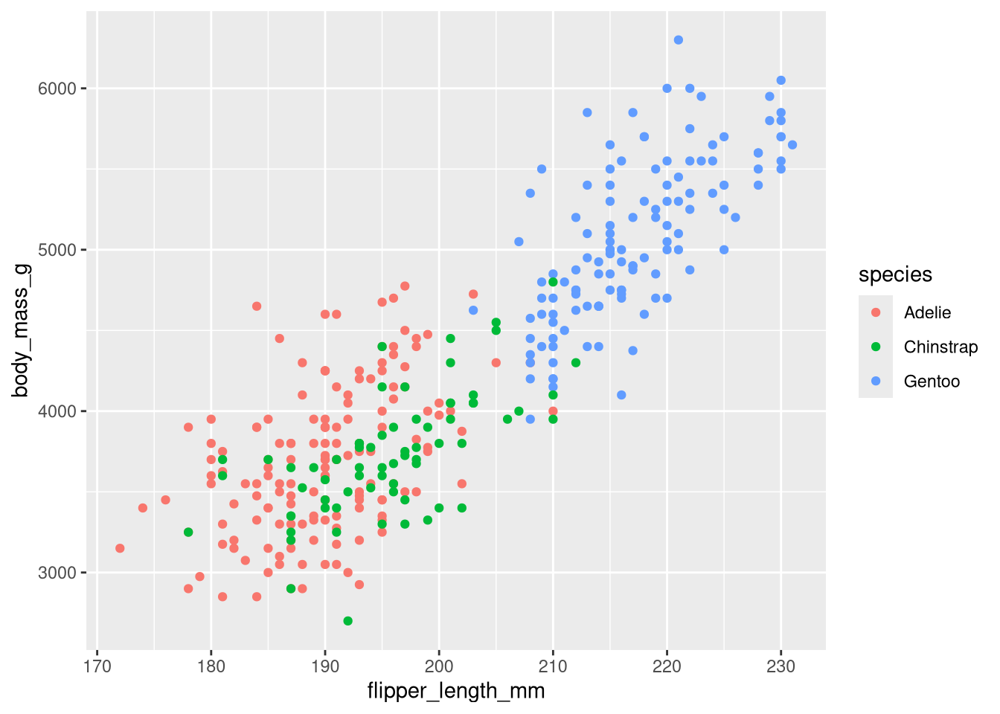
And also add a smooth curve:
ggplot(
data = penguins,
mapping = aes(x = flipper_length_mm, y = body_mass_g, color = species)
) +
geom_point() +
geom_smooth(method = "lm")`geom_smooth()` using formula = 'y ~ x'Warning: Removed 2 rows containing non-finite outside the scale range
(`stat_smooth()`).Warning: Removed 2 rows containing missing values or values outside the scale range
(`geom_point()`).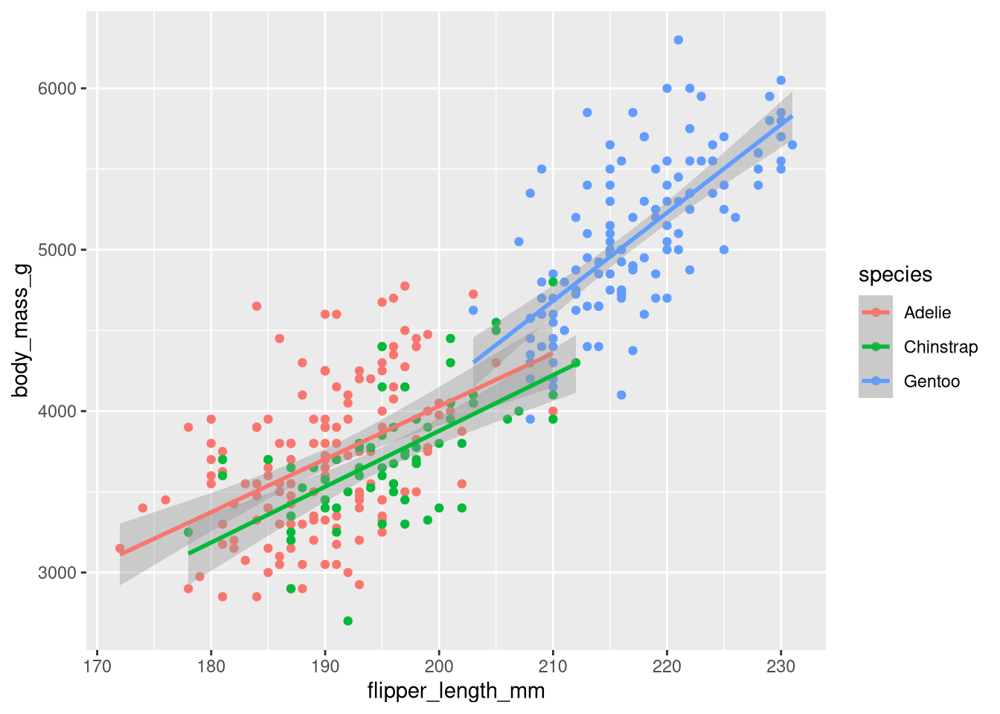
Now to have one overall line I need to write a bit different code:
ggplot(
data = penguins,
mapping = aes(flipper_length_mm, y = body_mass_g)
) +
# move the color by species down to here
geom_point(mapping = aes(color = species)) +
geom_smooth(method = "lm")`geom_smooth()` using formula = 'y ~ x'Warning: Removed 2 rows containing non-finite outside the scale range
(`stat_smooth()`).Warning: Removed 2 rows containing missing values or values outside the scale range
(`geom_point()`).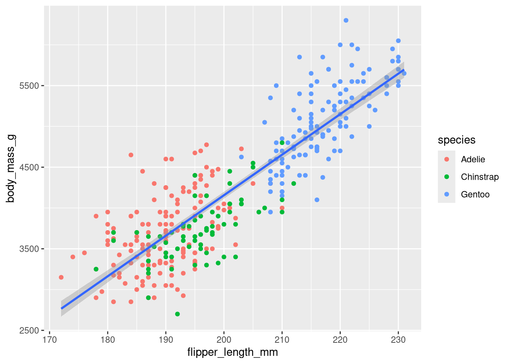
Also add shapes by species for the points, so the plot is sensible for color blindness:
ggplot(
data = penguins,
mapping = aes(x = flipper_length_mm, y = body_mass_g)
) +
geom_point(mapping = aes(color = species, shape = species)) +
geom_smooth(method = "lm")`geom_smooth()` using formula = 'y ~ x'Warning: Removed 2 rows containing non-finite outside the scale range
(`stat_smooth()`).Warning: Removed 2 rows containing missing values or values outside the scale range
(`geom_point()`).Finishing touches on the plot:
ggplot(data = penguins,
mapping = aes(x = flipper_length_mm, y = body_mass_g)
) +
geom_point(mapping = aes(color = species, shape = species)) +
geom_smooth(method = "lm") +
labs(
title = "Body mass and flipper length",
subtitle = "Dimensions for Adelie, Chinstrap, and Gentoo Penguins",
x = "Flipper length (mm)", y = "Body mass (g)",
color = "Species", shape = "Species"
) +
scale_color_colorblind()`geom_smooth()` using formula = 'y ~ x'Warning: Removed 2 rows containing non-finite outside the scale range
(`stat_smooth()`).Warning: Removed 2 rows containing missing values or values outside the scale range
(`geom_point()`).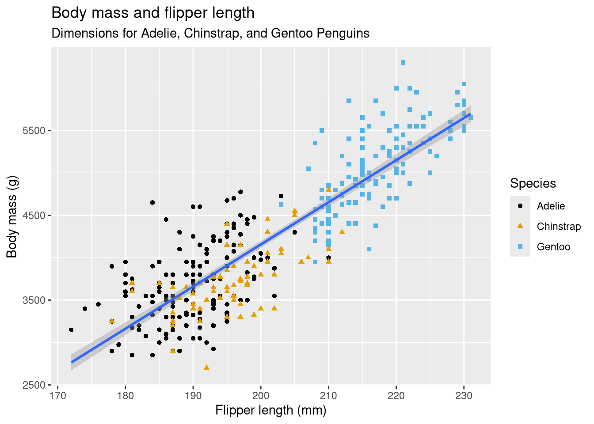
[skipped the “mapping” for geom_point in this chunk]
1.2.5 Exercises
1. How many rows are in penguins ? How many columns?
glimpse(penguins)Rows: 344
Columns: 8
$ species <fct> Adelie, Adelie, Adelie, Adelie, Adelie, Adelie, Adel…
$ island <fct> Torgersen, Torgersen, Torgersen, Torgersen, Torgerse…
$ bill_length_mm <dbl> 39.1, 39.5, 40.3, NA, 36.7, 39.3, 38.9, 39.2, 34.1, …
$ bill_depth_mm <dbl> 18.7, 17.4, 18.0, NA, 19.3, 20.6, 17.8, 19.6, 18.1, …
$ flipper_length_mm <int> 181, 186, 195, NA, 193, 190, 181, 195, 193, 190, 186…
$ body_mass_g <int> 3750, 3800, 3250, NA, 3450, 3650, 3625, 4675, 3475, …
$ sex <fct> male, female, female, NA, female, male, female, male…
$ year <int> 2007, 2007, 2007, 2007, 2007, 2007, 2007, 2007, 2007…There are 344 rows and 8 columns in penguins.
2. What does the bill_depth_mm variable in the penguins data frame describe?
?penguinsHelp on topic 'penguins' was found in the following packages:
Package Library
palmerpenguins /home/max/R/x86_64-pc-linux-gnu-library/4.5
datasets /usr/lib/R/library
Using the first match ...bill_depth_mm describes the bill depth in millimeters of penguins
3. Make a scatterplot of bill_depth_mm vs. bill_length_mm. That is, make a scatterplot with bill_depth_mm on the y-axis and bill_length_mm on the x-axis. Describe the relationship between the two variables.
ggplot(data = penguins,
mapping = aes(x = bill_length_mm, y = bill_depth_mm)
) +
geom_point()Warning: Removed 2 rows containing missing values or values outside the scale range
(`geom_point()`).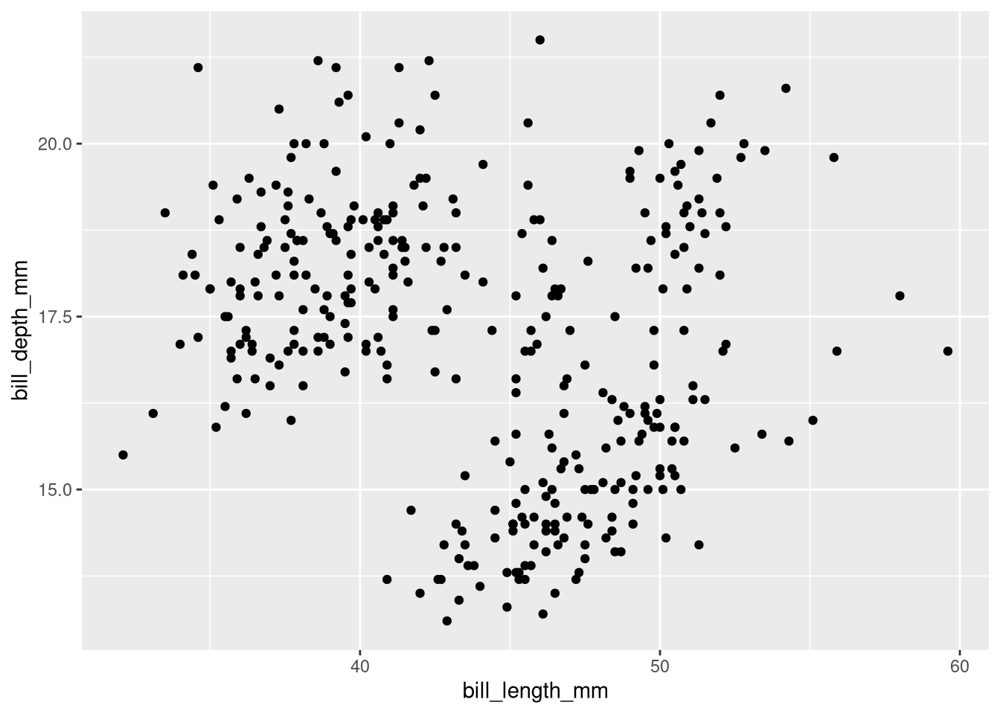
The scatterplot shows a rather random pattern, with a gap between bill depth 15 to 16 mm. This indicates separate groups in the data. Let’s also color the points by species and get an overall regression line to further investigate that assumption:
ggplot(
data = penguins,
mapping = aes(x = bill_length_mm, y = bill_depth_mm)
) +
geom_point(mapping = aes(color = species)) +
geom_smooth(method = "lm") +
# label the plot
labs(
title = "Bill depth and bill length",
subtitle = "Dimensions for Adelie, Chinstrap, and Gentoo Penguins",
x = "Bill length (mm)",
y = "Bill depth (mm)",
color = "Species"
) +
scale_color_colorblind()`geom_smooth()` using formula = 'y ~ x'Warning: Removed 2 rows containing non-finite outside the scale range
(`stat_smooth()`).Warning: Removed 2 rows containing missing values or values outside the scale range
(`geom_point()`).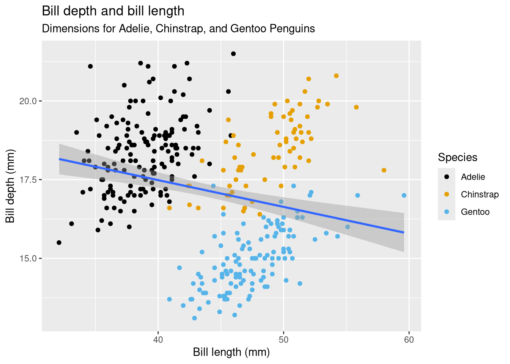
Now the scatterplot exhibits the different groups and their respective relationship of bill depth and bill length. However the regression line indicates a negative trend overall, but also doesn’t fit the points well. Let’s make a smooth line per group:
ggplot(
data = penguins,
mapping = aes(x = bill_length_mm, y = bill_depth_mm,
color = species)
) +
geom_point() +
geom_smooth(method = "lm") +
labs(
title = "Bill depth and bill length",
subtitle = "Dimensions and regression lines for Adelie, Chinstrap and Gentoo Penguins",
color = "Species",
x = "Bill length (mm)",
y = "Bill depth (mm)"
) +
scale_color_colorblind()`geom_smooth()` using formula = 'y ~ x'Warning: Removed 2 rows containing non-finite outside the scale range
(`stat_smooth()`).Warning: Removed 2 rows containing missing values or values outside the scale range
(`geom_point()`).The regression lines now indicate a positive relationship between bill depth and bill length within each species. Interestingly the Chinstrap Penguins seem to be separated into two groups.
4. What happens if you make a scatterplot of species vs. bill_depth_mm? What might be a better choice of geom?
ggplot(
data = penguins,
mapping = aes(x = species, y = bill_depth_mm)
) +
geom_point()Warning: Removed 2 rows containing missing values or values outside the scale range
(`geom_point()`).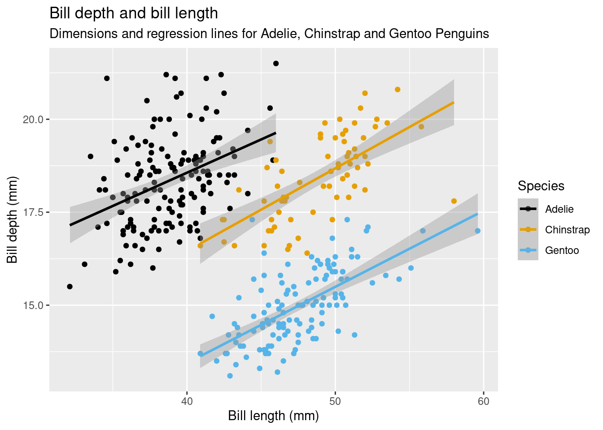
As species is a categorical variable, all the points are on a line for each species. So we can somewhat see that Gentoo Penguins have generally the shortest bills, there is not much more information in this plot. Which other geom would be sensible though? So far we the only other geom we learned is geom_smooth. Let’s try that:
ggplot(
data = penguins,
mapping = aes(x = species, y = bill_depth_mm)
) +
geom_smooth(method = "lm")`geom_smooth()` using formula = 'y ~ x'Warning: Removed 2 rows containing non-finite outside the scale range
(`stat_smooth()`).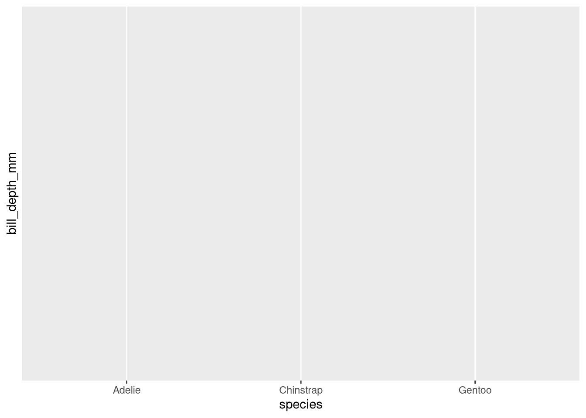
Okay that’s even less informative.
So let’s see what other geoms come up when I type geom_ into the console:
ggplot(
data = penguins,
mapping = aes(x = species, y = bill_depth_mm)
) +
geom_bin_2d()`stat_bin2d()` using `bins = 30`. Pick better value `binwidth`.Warning: Removed 2 rows containing non-finite outside the scale range
(`stat_bin2d()`).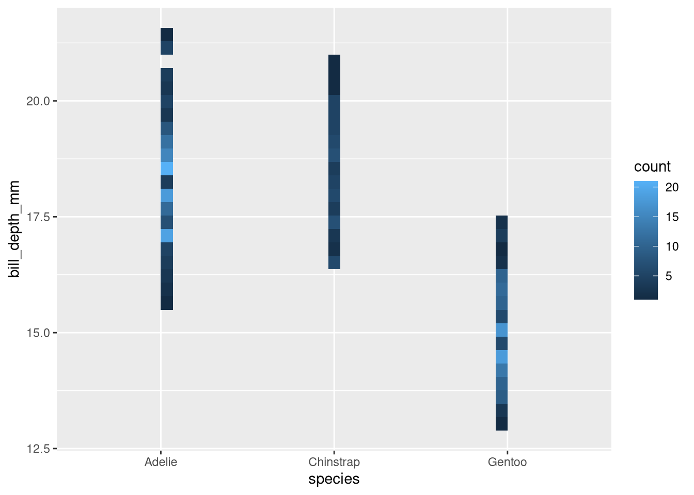
Okay geom_bin2d() seems more informative as you can see how many observations there are for each value of bill_depth_mm.
I mean what we also could do, is plotting bill_depth_mm vs. body_mass and color by species, aswell as adding a regression line, like in the first example plot. Let’s try that:
ggplot(
data = penguins,
mapping = aes(x = bill_depth_mm, y = body_mass_g)
) +
geom_point(mapping = aes(color = species, shape = species)) +
geom_smooth() +
scale_color_colorblind() +
labs(
title = "Bill depth and body mass",
subtitle = "Dimensions for Adelie, Chinstrap and Gentoo Penguins",
x = "Bill depth (mm)",
y = "Body mass (mm)"
)`geom_smooth()` using method = 'loess' and formula = 'y ~ x'Warning: Removed 2 rows containing non-finite outside the scale range
(`stat_smooth()`).Warning: Removed 2 rows containing missing values or values outside the scale range
(`geom_point()`).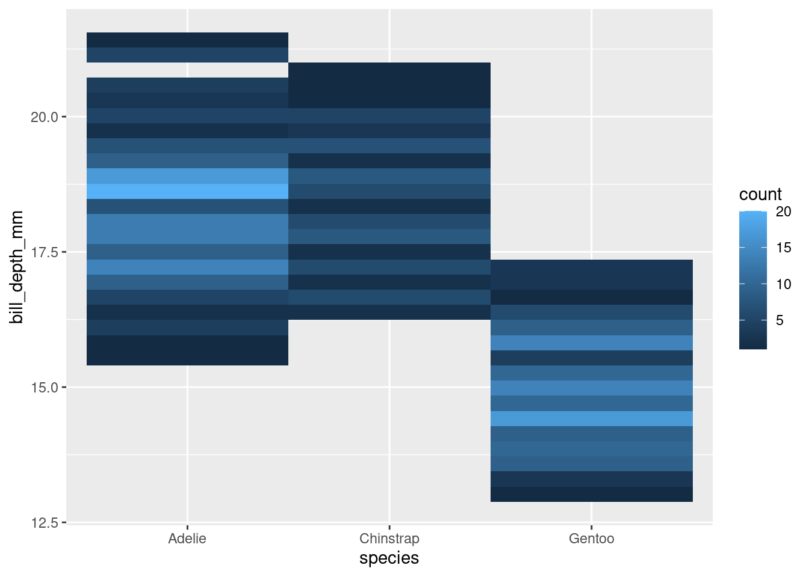
Well now we see that Gentoo Penguins, while being the heaviest, seem to have generally thinner bills. The regression line is wonky as there seem to be two groups and those are not linearly related. But yeah. That should suffice for now.
5. Why does the following give an error and how would you fix it?
ggplot(data = penguins) +
geom_point()Error in `geom_point()`:
! Problem while setting up geom.
ℹ Error occurred in the 1st layer.
Caused by error in `compute_geom_1()`:
! `geom_point()` requires the following missing aesthetics: x and y.geom_point expects the x and y aesthetics to be mapped. So I would map for example bill_depth_mm and body_mass_g to x and y respectively.
6. What does the na.rm argument do in geom_point()? What is the default value of the argument? Create a scatterplot where you successfully use this argument set to TRUE.
First check the documentation for geom_point()
?geom_point()The documentation states that this argument’s default value is FALSE. And further down it explains that this argument removes missing values either giving out a warning or not. Let’s do a plot and set na.rm to TRUE:
ggplot(
data = penguins,
mapping = aes(x = bill_depth_mm, y = body_mass_g, color = species)
) +
geom_point(na.rm = TRUE)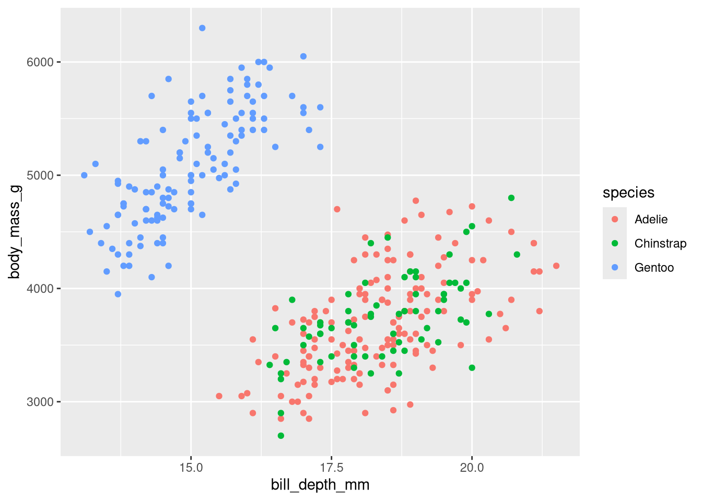
Ah yeah, there is no more warning in the output.
7. Add the following caption to the plot you made in the previous exercise:“Data come from the palmerpenguins package.” Hint: Take a look at the documentation for labs().
Check the documentation for labs
?labs()According to the documentation there is an caption argument, so I will try this for the plot:
Let’s make it with shapes and for colorblind aswell
ggplot(
data = penguins,
mapping = aes(x = bill_depth_mm, y = body_mass_g,
color = species, shape = species)
) +
# and keep the na.rm for tidy code
geom_point(na.rm = TRUE) +
scale_color_colorblind() +
labs(
title = "Bill depth and Body mass",
subtitle = "Dimensions for Adelie, Chinstrap and Gentoo Penguins",
# here comes the caption
caption = "Data comes from the palmerpenguins package.",
x = "Bill depth (mm)",
y = "Body mass (g)"
)8. Recreate the following visualization. What aesthetic should bill_depth_mm be mapped to? And should it be mapped at the global level or at the geom level?
 We see a scatterplot of
We see a scatterplot of body_mass_g and flipper_length_mm with an added geom_smooth(). Everything else is default. Let’s recreate it:
ggplot(
data = penguins,
mapping = aes(x = flipper_length_mm, y = body_mass_g)
) +
geom_point() +
geom_smooth(method = "lm")`geom_smooth()` using formula = 'y ~ x'Warning: Removed 2 rows containing non-finite outside the scale range
(`stat_smooth()`).Warning: Removed 2 rows containing missing values or values outside the scale range
(`geom_point()`).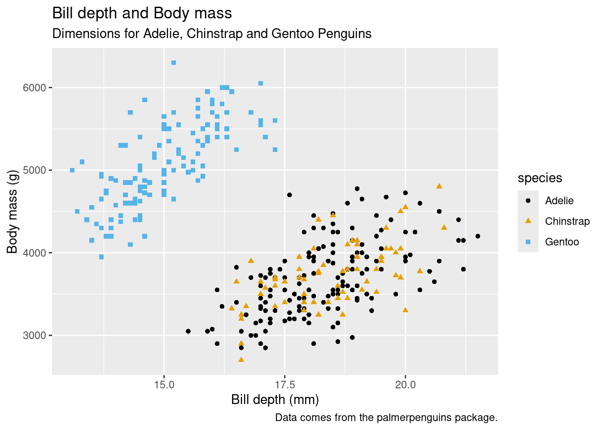
Ah now I see that there is also bill_depth_mm mapped to the color aesthetic. Let’s add that aswell:
ggplot(
data = penguins,
mapping = aes(x = flipper_length_mm, y = body_mass_g,
color = bill_depth_mm)
) +
geom_point() +
geom_smooth(method = "lm")`geom_smooth()` using formula = 'y ~ x'Warning: Removed 2 rows containing non-finite outside the scale range
(`stat_smooth()`).Warning: The following aesthetics were dropped during statistical transformation:
colour.
ℹ This can happen when ggplot fails to infer the correct grouping structure in
the data.
ℹ Did you forget to specify a `group` aesthetic or to convert a numerical
variable into a factor?Warning: Removed 2 rows containing missing values or values outside the scale range
(`geom_point()`).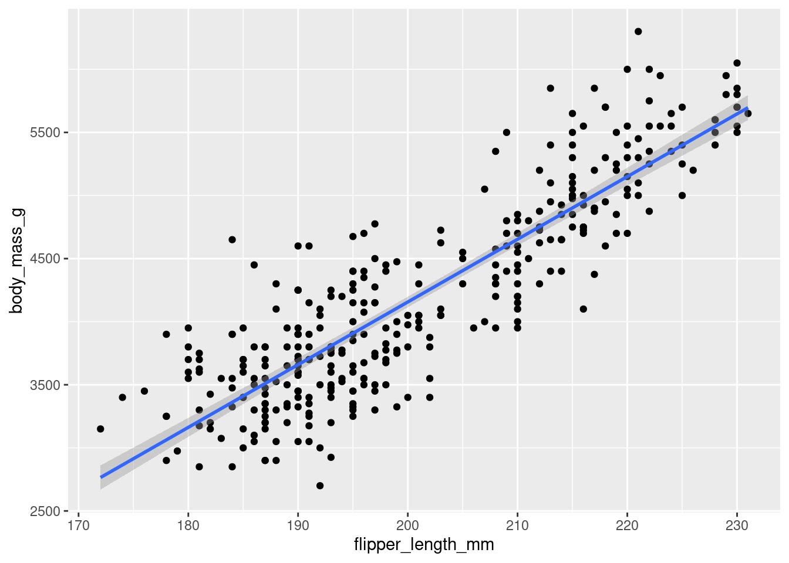
Okay, that seems right. There are many warnings, but the plot got rendered.
9. Run this code in your head and predict what the output will look like. Then, run the code in R and check your predictions.
ggplot(
data = penguins,
mapping = aes(x = flipper_length_mm, y = body_mass_g, color = island)
) +
geom_point() +
geom_smooth(se = FALSE)geom_point() and geom_smooth() tell me that this will be a scatterplot of flipper_length_mm and body_mass_g with a regression line. Ah and color = island tells me that the points will be colored by island, and I think that also makes a regression line for each island group. Let’s see:
ggplot(
data = penguins,
mapping = aes(x = flipper_length_mm, y = body_mass_g, color = island)
) +
geom_point() +
geom_smooth(se = FALSE)`geom_smooth()` using method = 'loess' and formula = 'y ~ x'Warning: Removed 2 rows containing non-finite outside the scale range
(`stat_smooth()`).Warning: Removed 2 rows containing missing values or values outside the scale range
(`geom_point()`).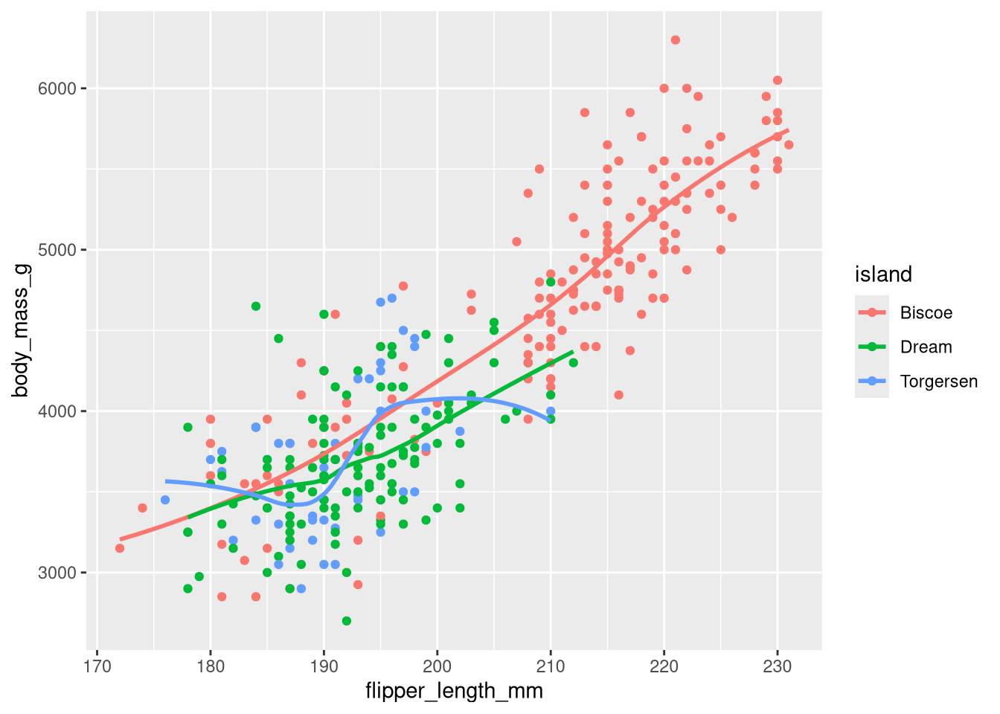
Ah and the se = false argument for geom_smooth() hides the gray areas around the regression lines.
10. Will these two graphs look different? Why/why not?
ggplot(
data = penguins,
mapping = aes(x = flipper_length_mm, y = body_mass_g)
) +
geom_point() +
geom_smooth()
ggplot() +
geom_point(
data = penguins,
mapping = aes(x = flipper_length_mm, y = body_mass_g)
) +
geom_smooth(
data = penguins,
mapping = aes(x = flipper_length_mm, y = body_mass_g)
)Actually, I think both codes will get the same graph. The layers geom_point() and geom_smooth() are the same in each and from ?geom_point I could read that geoms also takes the data and mapping arguments directly. So while the second code is more to type both are the same i guess. Let’s see:
ggplot(
data = penguins,
mapping = aes(x = flipper_length_mm, y = body_mass_g)
) +
geom_point() +
geom_smooth()`geom_smooth()` using method = 'loess' and formula = 'y ~ x'Warning: Removed 2 rows containing non-finite outside the scale range
(`stat_smooth()`).Warning: Removed 2 rows containing missing values or values outside the scale range
(`geom_point()`).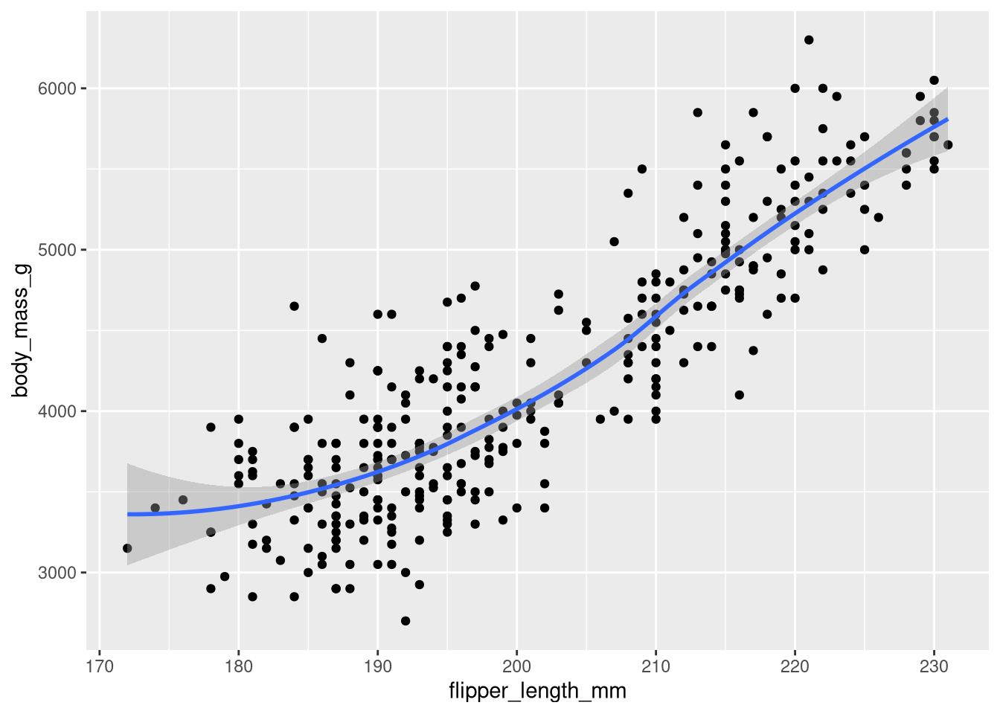
ggplot() +
geom_point(
data = penguins,
mapping = aes(x = flipper_length_mm, y = body_mass_g)
) +
geom_smooth(
data = penguins,
mapping = aes(x = flipper_length_mm, y = body_mass_g)
)`geom_smooth()` using method = 'loess' and formula = 'y ~ x'Warning: Removed 2 rows containing non-finite outside the scale range (`stat_smooth()`).
Removed 2 rows containing missing values or values outside the scale range
(`geom_point()`).
1.4 Visualizing distributions
1.4.1 Categorical Variables
- Categorical Variables
- aka qualitative variables
- can take only a small set of values
- mathematical calculations don’t yield practical results
[Why not also qualitative variable here, like with numerical variables?]
For example species. geom_bar() is good for that. It counts the number of observations for each ‘level’ of a category and sizes the bars accordingly.
ggplot(
data = penguins,
mapping = aes(x = species)
) +
geom_bar()
Use fct_infreq() to get the bars ordered by count.
ggplot(
data = penguins,
mapping = aes(x = fct_infreq(species))
) +
geom_bar()
1.4.2 Numerical variables
- numerical variables
- aka quantitative variables
- can take a wide range of numerical values
- you get sensible results when calculating with the values
Example body_mass_g. geom_histogram() and geom_density() are good for that.
While the histogram is more true to the original distribution of the data, the density curve usually is more easy to get an intuition of the distribution. However the line in the plot is only a mathematical approximation, so some information is not visible. Let’s check it out:
ggplot(
data = penguins,
mapping = aes(x = body_mass_g)
) +
geom_density()Warning: Removed 2 rows containing non-finite outside the scale range
(`stat_density()`).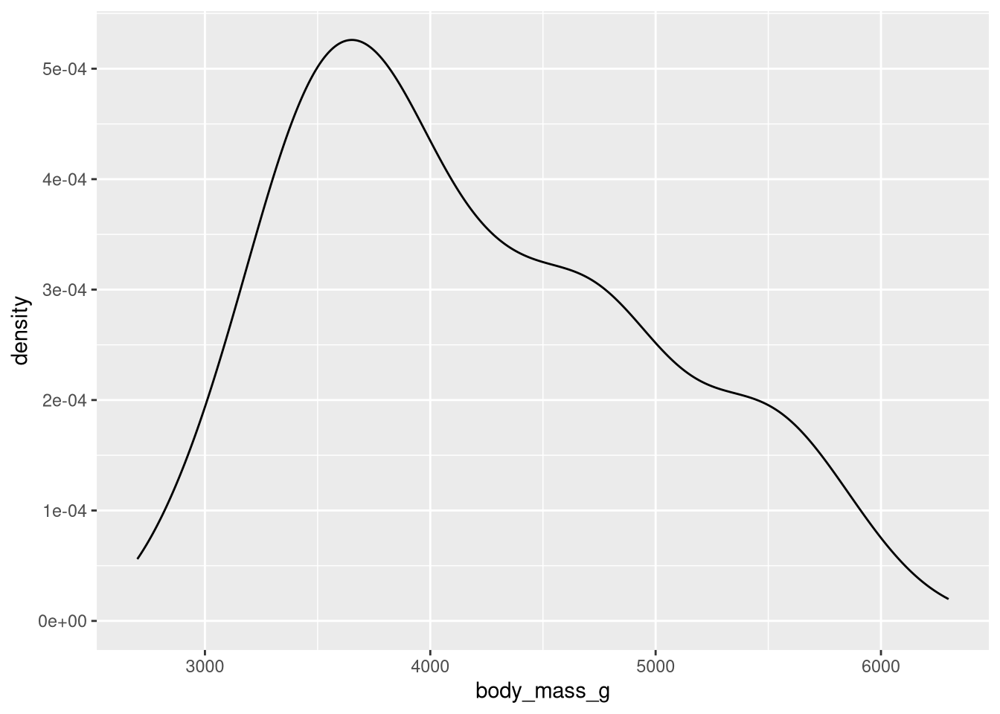
1.4.3 Exercises
1. Make a barplot of species of penguins, where you assing species to the y aesthetic. How is this plot different?
why is scatterplot written as one and bar plot written as two words?
ggplot(
data = penguins,
mapping = aes(y = species)
) +
geom_bar()Okay and the same plot with species on the x axis:
ggplot(
data = penguins,
mapping = aes(x = species)
) +
geom_bar()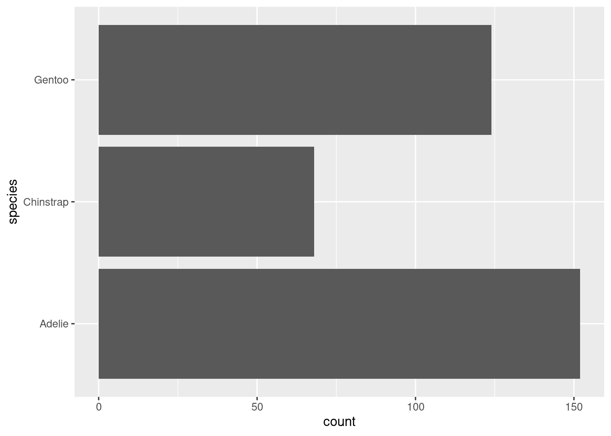
Gotcha, so the bars either go in x direction, that is vertical; or they go in y direction, that is, horizontal.
2. How are the following two plots different? Which aesthetic, color or fill, is more useful for changing the color of the bars?
ggplot(
data = penguins,
mapping = aes(x = species)
) +
geom_bar(color = "red")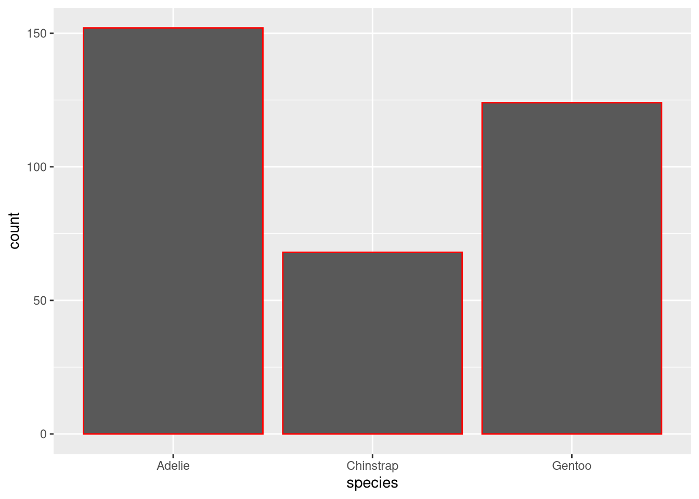
ggplot(
data = penguins,
mapping = aes(x = species)
) +
geom_bar(fill = "red")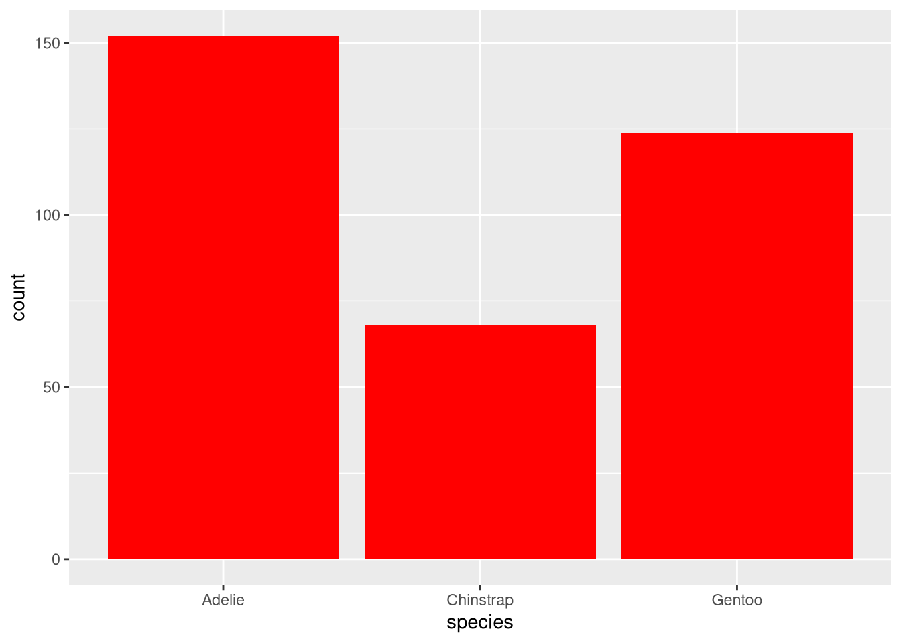
So color applies to the outline and fill to the area of the geom.
3. What does the bins argument in geom_histogram() do?
I can remember this. The bins… hold up!
So bins and binwidth are separate arguments. binwidth was explained before. Its value defines how wide each bin is, in the units of the variable that is mapped to the geom.
I think with bins you define how many bins in total you want the data to be sorted into. Let’s try it by making a histogram with ten bins:
ggplot(
data = penguins,
mapping = aes(x = body_mass_g)
) +
geom_histogram(bins = 10)Warning: Removed 2 rows containing non-finite outside the scale range
(`stat_bin()`).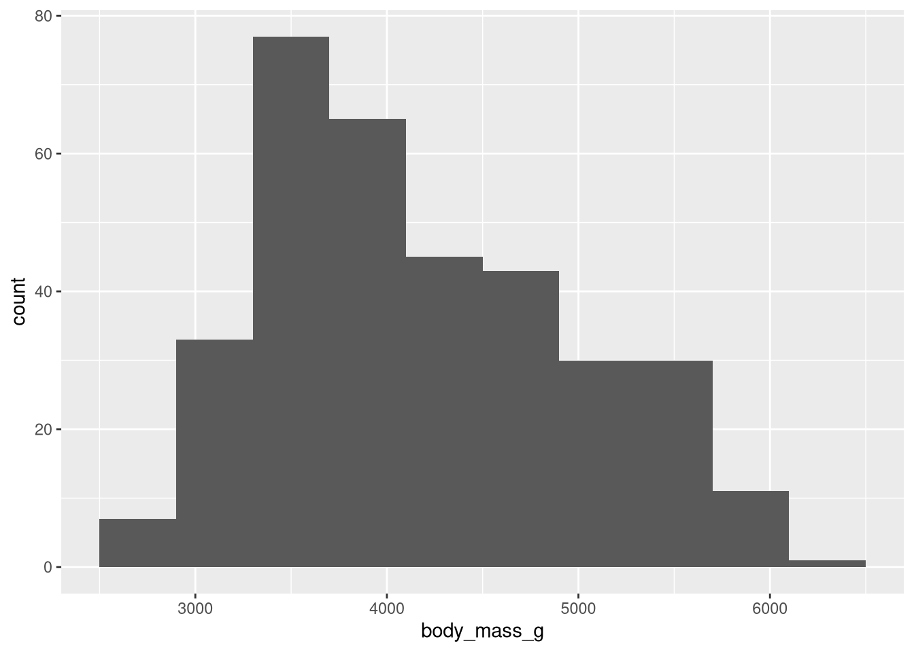
Yep, that’s ten.
4. Make a histogram of the carat variable in the diamonds dataset that is available when you load the tidyverse package. Experiment with different binwidths. What binwidth reveals the most interesting patterns?
Let’s first take a look at the dataset, to get a sense for the scale of the carat and also check the documentation:
glimpse(diamonds)Rows: 53,940
Columns: 10
$ carat <dbl> 0.23, 0.21, 0.23, 0.29, 0.31, 0.24, 0.24, 0.26, 0.22, 0.23, 0.…
$ cut <ord> Ideal, Premium, Good, Premium, Good, Very Good, Very Good, Ver…
$ color <ord> E, E, E, I, J, J, I, H, E, H, J, J, F, J, E, E, I, J, J, J, I,…
$ clarity <ord> SI2, SI1, VS1, VS2, SI2, VVS2, VVS1, SI1, VS2, VS1, SI1, VS1, …
$ depth <dbl> 61.5, 59.8, 56.9, 62.4, 63.3, 62.8, 62.3, 61.9, 65.1, 59.4, 64…
$ table <dbl> 55, 61, 65, 58, 58, 57, 57, 55, 61, 61, 55, 56, 61, 54, 62, 58…
$ price <int> 326, 326, 327, 334, 335, 336, 336, 337, 337, 338, 339, 340, 34…
$ x <dbl> 3.95, 3.89, 4.05, 4.20, 4.34, 3.94, 3.95, 4.07, 3.87, 4.00, 4.…
$ y <dbl> 3.98, 3.84, 4.07, 4.23, 4.35, 3.96, 3.98, 4.11, 3.78, 4.05, 4.…
$ z <dbl> 2.43, 2.31, 2.31, 2.63, 2.75, 2.48, 2.47, 2.53, 2.49, 2.39, 2.…?diamondsGood, it says carat has values from 0.2 to 5.01. So I start with a binwidth of 0.1 and 0.01, to see what histograms I get.
ggplot(
data = diamonds,
mapping = aes(x = carat)
) +
geom_histogram(binwidth = 0.1)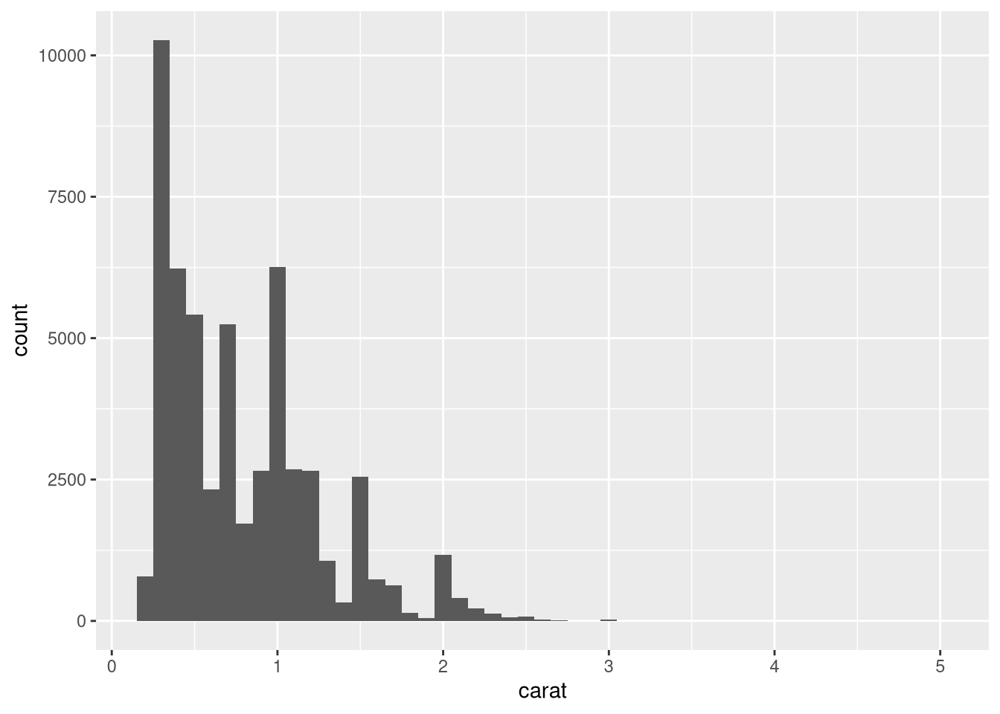
ggplot(
data = diamonds,
mapping = aes(x = carat)
) +
geom_histogram(binwidth = 0.01)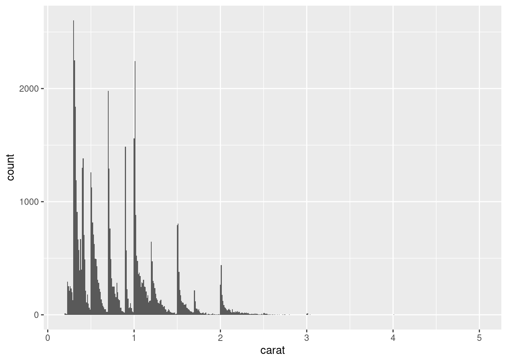
Interesting! There seems to be a pattern. A lot of diamonds are around values that are a quarter of a carat.
Let’s do two things. One histogram with binwidth 0.25 to check if I read the pattern rigth and one with 0.005 to see whether it repeats on even lower scale.
ggplot(
data = diamonds,
mapping = aes(x = carat)
) +
geom_histogram(binwidth = 0.25)ggplot(
data = diamonds,
mapping = aes(x = carat)
) +
geom_histogram(binwidth = 0.005)Ahh! The 0.25 did not bring something new. I misinterpreted that. But check out the 0.005 histogram! There are some empty bins. I guess we found the minimal carat they could measure, which is 0.01. And it seems that there are more diamonds on whole carat and quarter fractions. Is probably a size that buyers like to see.
1.5 Visualizing relationships
1.5.1 A numerical and a categorical variable
Example, boxplot of body mass and species:
ggplot(
data = penguins,
mapping = aes(x = species, y = body_mass_g)
) +
geom_boxplot()Warning: Removed 2 rows containing non-finite outside the scale range
(`stat_boxplot()`).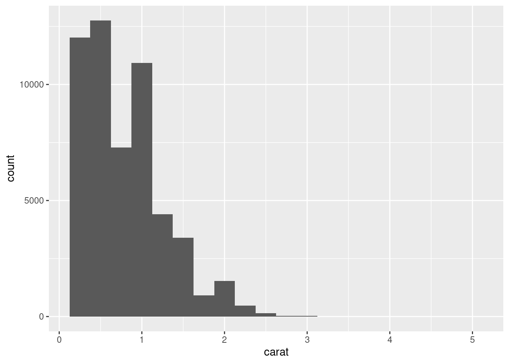
Or alternatively density plots by species:
ggplot(
data = penguins,
mapping = aes(x = body_mass_g, color = species)
) +
geom_density(linewidth = 0.75)Warning: Removed 2 rows containing non-finite outside the scale range
(`stat_density()`).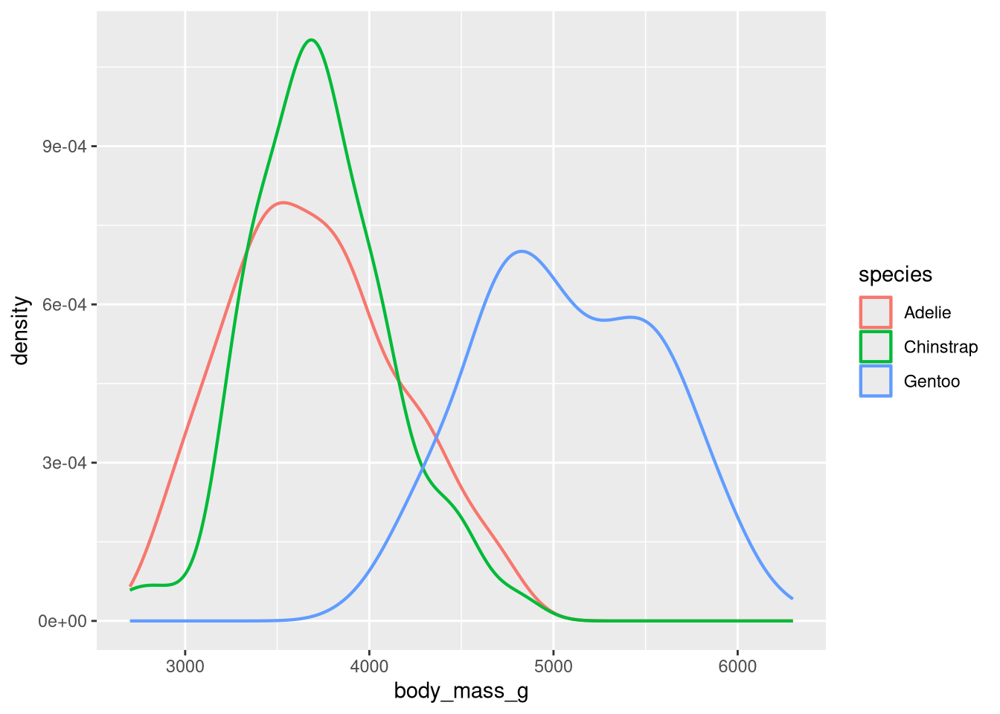
To make it more appealing, add fill, but make the overlap visible with the alpha argument:
ggplot(
data = penguins,
mapping = aes(x = body_mass_g, color = species, fill = species)
) +
geom_density(alpha = 0.5, linewidth = 0.75)Warning: Removed 2 rows containing non-finite outside the scale range
(`stat_density()`).- mapping to an aesthetic
- have the visual attribute vary based on the values of the variable
- setting an aesthetic
- set the value ‘manually’
1.5.2 Two categorical variables
Example, stacked bar plots of island and species.
First one so you can see the raw counts:
ggplot(
data = penguins,
mapping = aes(x = island, fill = species)
) +
geom_bar()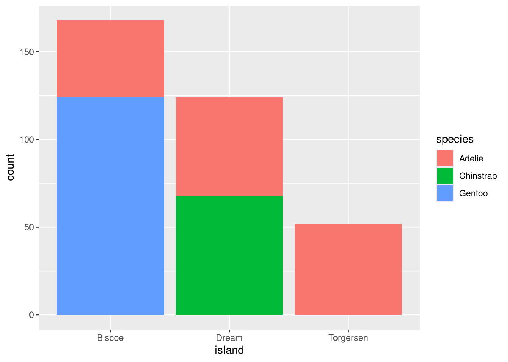
Second one to see the proportions, with position = "fill" argument:
ggplot(
data = penguins,
mapping = aes(x = island, fill = species)
) +
geom_bar(position = "fill")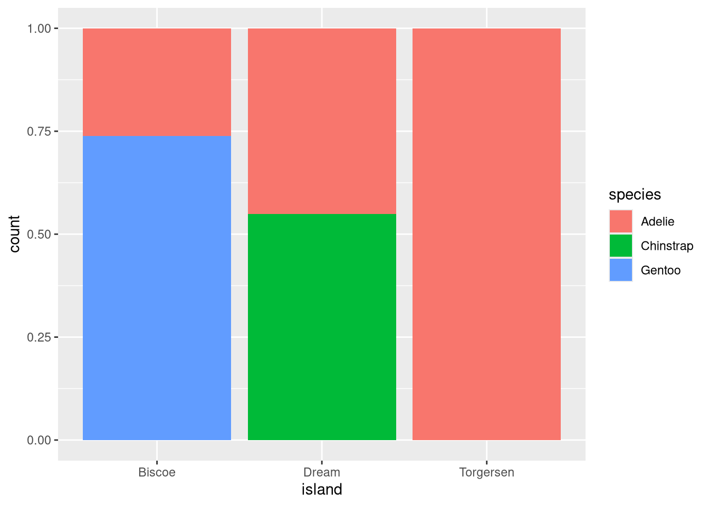
1.5.3 Two numerical variables
Example, scatterplot of flipper length and body mass. Just like in section 1.1 and 1.2
ggplot(
data = penguins,
mapping = aes(x = flipper_length_mm, y = body_mass_g)
) +
geom_point()Warning: Removed 2 rows containing missing values or values outside the scale range
(`geom_point()`).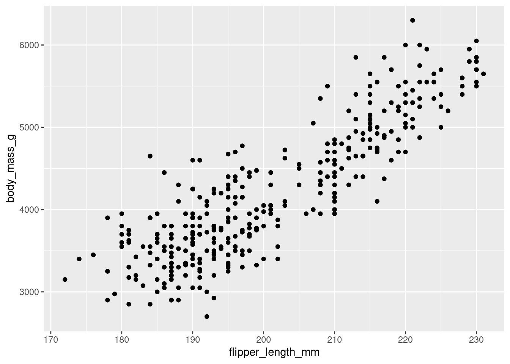
1.5.4 Three or more variables
Example, scatterplot of flipper length and body mass, with colors by species and shape by island.
ggplot(
data = penguins,
mapping = aes(x = flipper_length_mm, y = body_mass_g,
color = species, shape = island)
) +
geom_point()Warning: Removed 2 rows containing missing values or values outside the scale range
(`geom_point()`).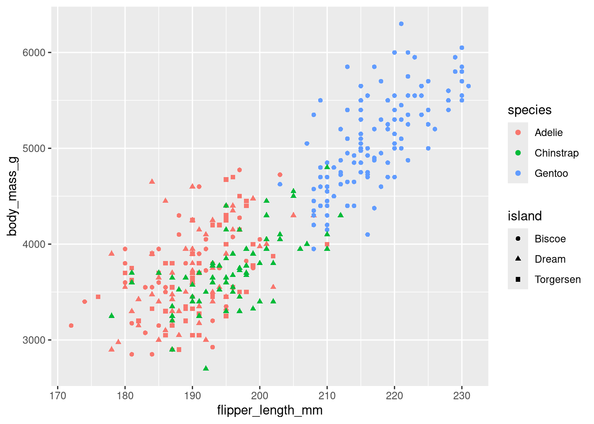
But yeah, that’s pretty busy and relatively less informative.
At this point, splitting the plot into facets with facet_wrap() would be one solution. Note the ~ in the facet wrap function. This is the tilde sign, which is used in R for formulas. More on that later though.
ggplot(
data = penguins,
mapping = aes(x = flipper_length_mm, y = body_mass_g,
color = species, shape = species)
) +
geom_point() +
facet_wrap(~island)Warning: Removed 2 rows containing missing values or values outside the scale range
(`geom_point()`).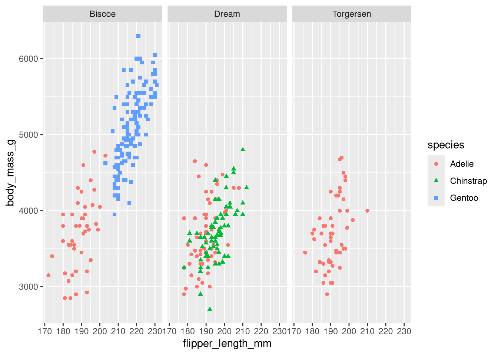
1.5.5 Exercises
1. The mpg data frame that is bundled with the ggplot2 package contains 234 observations collected by the US Environmental Protection Agency on 38 car models.
- Which variables in
mpgare categorical? - Which variables are numerical? Hint: Type
?mpgto read the documentation for the dataset. - How can you see this information when you run
mpg?
Read the documentation, glimpse() the dataframe and run mpg directly:
?mpg
glimpse(mpg)Rows: 234
Columns: 11
$ manufacturer <chr> "audi", "audi", "audi", "audi", "audi", "audi", "audi", "…
$ model <chr> "a4", "a4", "a4", "a4", "a4", "a4", "a4", "a4 quattro", "…
$ displ <dbl> 1.8, 1.8, 2.0, 2.0, 2.8, 2.8, 3.1, 1.8, 1.8, 2.0, 2.0, 2.…
$ year <int> 1999, 1999, 2008, 2008, 1999, 1999, 2008, 1999, 1999, 200…
$ cyl <int> 4, 4, 4, 4, 6, 6, 6, 4, 4, 4, 4, 6, 6, 6, 6, 6, 6, 8, 8, …
$ trans <chr> "auto(l5)", "manual(m5)", "manual(m6)", "auto(av)", "auto…
$ drv <chr> "f", "f", "f", "f", "f", "f", "f", "4", "4", "4", "4", "4…
$ cty <int> 18, 21, 20, 21, 16, 18, 18, 18, 16, 20, 19, 15, 17, 17, 1…
$ hwy <int> 29, 29, 31, 30, 26, 26, 27, 26, 25, 28, 27, 25, 25, 25, 2…
$ fl <chr> "p", "p", "p", "p", "p", "p", "p", "p", "p", "p", "p", "p…
$ class <chr> "compact", "compact", "compact", "compact", "compact", "c…mpg# A tibble: 234 × 11
manufacturer model displ year cyl trans drv cty hwy fl class
<chr> <chr> <dbl> <int> <int> <chr> <chr> <int> <int> <chr> <chr>
1 audi a4 1.8 1999 4 auto… f 18 29 p comp…
2 audi a4 1.8 1999 4 manu… f 21 29 p comp…
3 audi a4 2 2008 4 manu… f 20 31 p comp…
4 audi a4 2 2008 4 auto… f 21 30 p comp…
5 audi a4 2.8 1999 6 auto… f 16 26 p comp…
6 audi a4 2.8 1999 6 manu… f 18 26 p comp…
7 audi a4 3.1 2008 6 auto… f 18 27 p comp…
8 audi a4 quattro 1.8 1999 4 manu… 4 18 26 p comp…
9 audi a4 quattro 1.8 1999 4 auto… 4 16 25 p comp…
10 audi a4 quattro 2 2008 4 manu… 4 20 28 p comp…
# ℹ 224 more rowsThe documentation explains the columns further, but does not list the variable type, while glimpse() gives a short overview of the dataframe and shows the variable type in its second row. You can find this information also when calling mpg directly, then it’s right under each column header. You have to scroll through the columns though.
In total there are six categorical variables (basically all <chr> columns) and five numerical variables.
The categorical variables are manufacturer, model, trans, drv, fl and class.
The numerical variables are displ, year, cyl, cty and hwy.
Well come to think of it, cyl, which is the number of cylinders might count as a categorical variable, as there are usually a few possible values for that and arithmetic doesn’t seem sensible in that case.
2. Make a scatterplot of hwyvs. displ using the mpg data frame.
Next, map a third numerical variable to
color, thensize, then bothcolorandsize, thenshape. How do these aesthetics behave differently for categorical vs. numerical variables?
Scatterplot of hwy vs. displ. The vs. implicates for me that you read it like ‘y vs. x’. Well that’s at least a convention I follow.
ggplot(
data = mpg,
mapping = aes(x = displ, y = hwy)
) +
geom_point()
Adding trans, a categorical to color:
ggplot(
data = mpg,
mapping = aes(x = displ, y = hwy, color = trans)
) +
geom_point()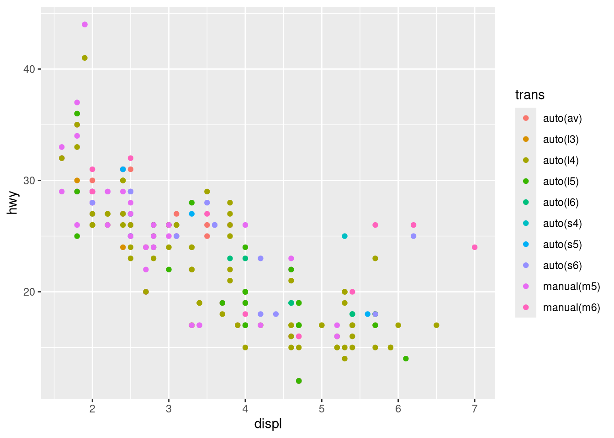
Looks very busy to me. But I can make out that auto(l4) and manual(m5) seem to be the most common transmission types.
Add cty as a numerical variable to size.
ggplot(
data = mpg,
mapping = aes(x = displ, y = hwy,
color = trans, size = cty)
) +
geom_point()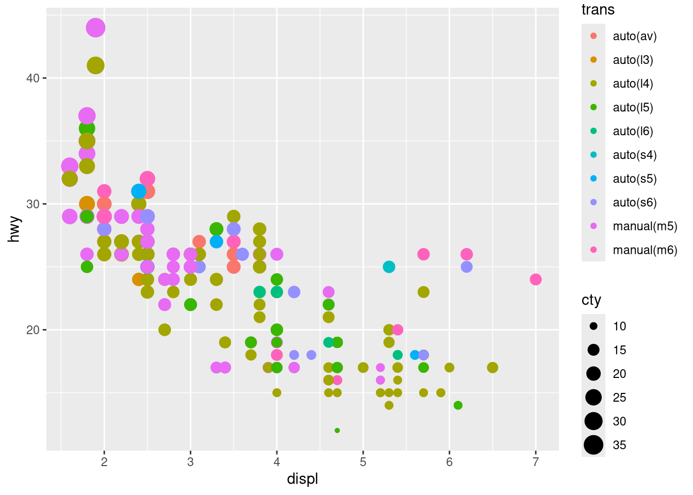
So it seems like it put the numerical variable into bins and then draws the point size accordingly.
Now map cty to both color and size:
ggplot(
data = mpg,
mapping = aes(x = displ, y = hwy,
color = cty, size = cty)
) +
geom_point()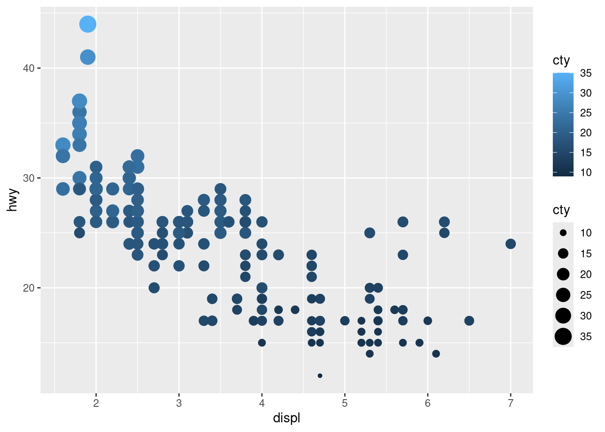
Now we see that color and size of the points are continuous and the bins are just in the legend to help you orient.
Now map cty only to shape:
ggplot(
data = mpg,
mapping = aes(x = displ, y = hwy,
shape = cty)
) +
geom_point()Error in `geom_point()`:
! Problem while computing aesthetics.
ℹ Error occurred in the 1st layer.
Caused by error in `scale_f()`:
! A continuous variable cannot be mapped to the shape aesthetic.
ℹ Choose a different aesthetic or use `scale_shape_binned()`.Ah okay, continuous variables are not by default mapable to shape.
3. In the scatterplot of hwy vs. dspl, what happens if you map a third variable to linewidth?
I will map cty to linewidth. Interesting what will happen, as it’s just points. So what does linewidth even apply to? Let’s see:
ggplot(
data = mpg,
mapping = aes(x = displ, y = hwy)
) +
geom_point(
mapping = aes(linewidth = cty)
)Warning in geom_point(mapping = aes(linewidth = cty)): Ignoring unknown
aesthetics: linewidth
Ah, so linewidth is unknown for the scatterplot and therefore ignored, but at least a warning is given.
4. What happens if you map the same variable to multiple aesthetics?
Let’s map hwy to x, y and color:
ggplot(
data = mpg,
mapping = aes(x = hwy, y = hwy, color = hwy)
) +
geom_point()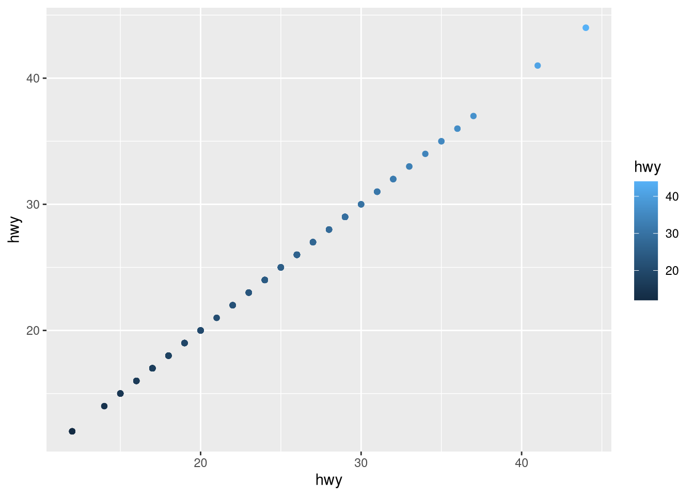
Seems like it did what I asked for. It’s just not much new information. We can see the distribution a bit.
5. Make a scatterplot of bill_depth_mm vs. bill_length_mm and color the points by species.
What does adding coloring by species reveal about the relationship between these two variables? What about faceting by
species?
[!note] Why is the second
speciesnot formated like the other occurences?
So there are two visualizations to be done. Let’s start with the scatterplot:
ggplot(
data = penguins,
mapping = aes(x = bill_length_mm, y = bill_depth_mm, color = species)
) +
geom_point()Warning: Removed 2 rows containing missing values or values outside the scale range
(`geom_point()`).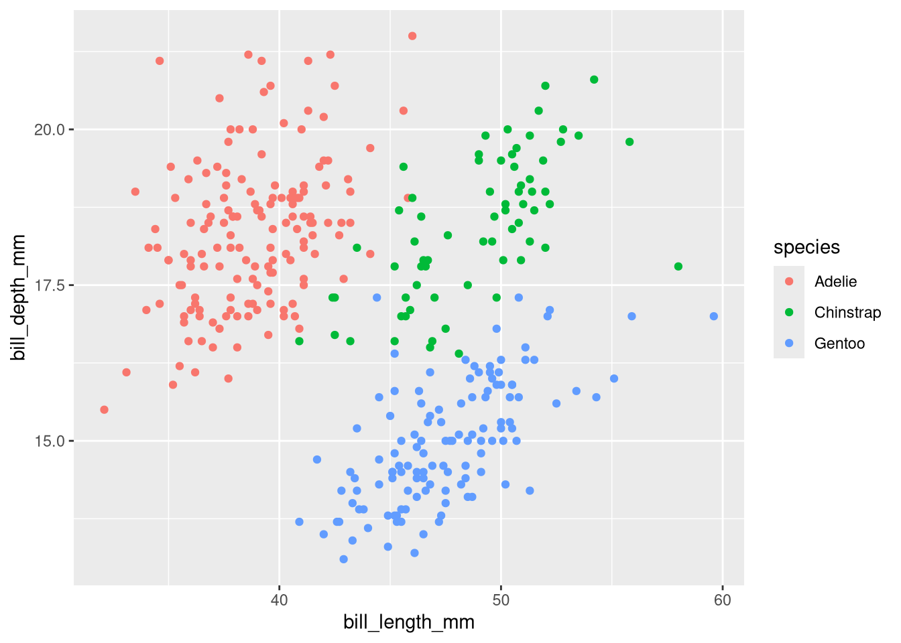
The colors in the plot make out the distinction between the species. You can see that the points for each form separate groups in the value ranges of bill length and bill depth.
Let’s do the facets now! I will keep the coloring, as I think it won’t harm the appeal of the plot.
ggplot(
data = penguins,
mapping = aes(x = bill_length_mm, y = bill_depth_mm, color = species)
) +
geom_point() +
facet_wrap(~ species)Warning: Removed 2 rows containing missing values or values outside the scale range
(`geom_point()`).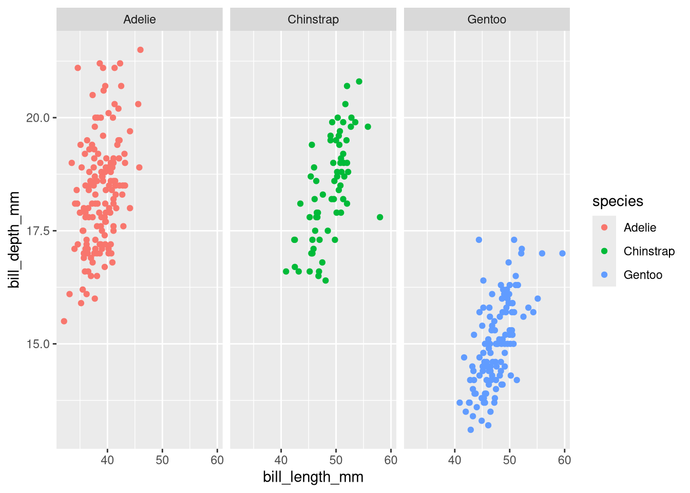
Well you can see the same. The species make up clusters. So Gentoo penguins have the longest but thinnest bills, while Adelie and Chinstrap penguins have similarly wide bills, even though Adelies have generally the shortest bills of all three species.
I think though that you can see the relation of those groups better when they are all in one plot, whereas the faceting makes the individual ranges more clear.
6.
Why does the following yield two separate legends? How would you fix it to combine the two legends?
Sample code:
ggplot(
data = penguins,
mapping = aes(
x = bill_length_mm, y = bill_depth_mm,
color = species, shape = species
)
) +
geom_point() +
labs(color = "Species")Warning: Removed 2 rows containing missing values or values outside the scale range
(`geom_point()`).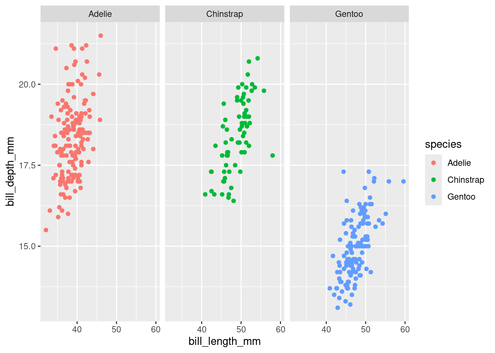
The labs makes it so that shape and color get a different label for their legends. Maybe if I leave labs out, both will become one legend.
Let’s see:
ggplot(
data = penguins,
mapping = aes(
x = bill_length_mm, y = bill_depth_mm,
color = species, shape = species
)
) +
geom_point()Warning: Removed 2 rows containing missing values or values outside the scale range
(`geom_point()`).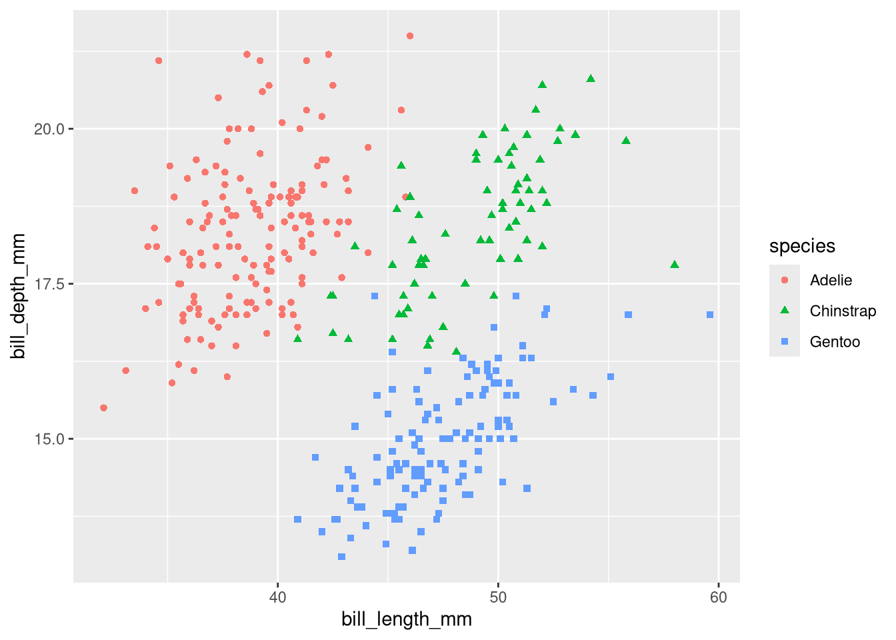
Good, that solved it. And if I wanted to have “Species” with the capital “S” I would have to set this for both aesthetics in the labs function.
ggplot(
data = penguins,
mapping = aes(
x = bill_length_mm, y = bill_depth_mm,
color = species, shape = species
)
) +
geom_point() +
labs(
color = "Species",
shape = "Species"
)Warning: Removed 2 rows containing missing values or values outside the scale range
(`geom_point()`).7.
Create the two following stacked bar plots. Which question can you answer with the first one? Which question can you answer with the second one?
ggplot(penguins, aes(x = island, fill = species)) +
geom_bar(position = "fill")ggplot(penguins, aes(x = species, fill = island)) +
geom_bar(position = "fill")
The first stacked bar plot answers the question: “What is the proportion of species among all the penguins of each island?”
The second stacked bar plot answers the question: “How are the penguins of each species distributed among the islands?”
You can roughly read it like: “What is the proportion of fill among all the ‘observational units’ for each x?”
So in case of the second plot it would read: “What is the proportion of islands among all the ‘penguins’ for each species?
Yeah, you’d have to tweak it a bit case by case.
1.6 Saving your plots
1.6.1 Exercises
1.
Run the following lines of code. Which of the two plots is saved as
mpg-plot.png? Why?
Example code:
ggplot(mpg, aes(x = class)) +
geom_bar()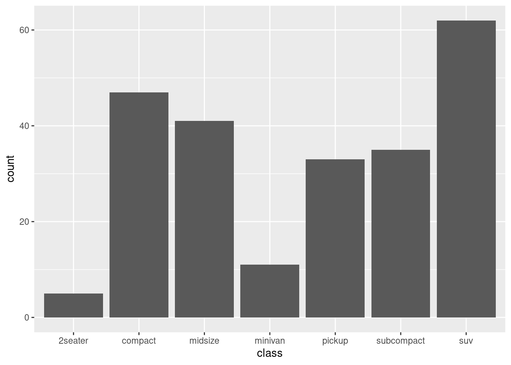
ggplot(mpg, aes(x = cty, y = hwy)) +
geom_point()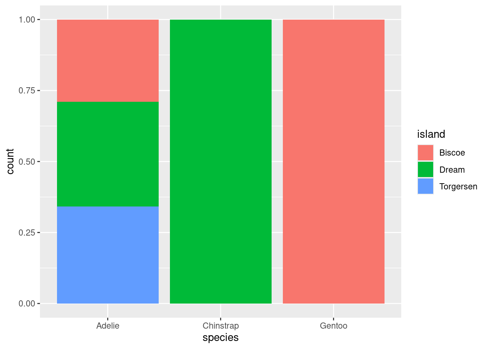
ggsave("mpg-plot.png")Saving 7 x 5 in imageCan I display this plot somehow from the file? Well the internet search shows some extra packages that can do that, but not natively within R-Studio. So you will have to believe me that
I’ve checked the mpg-plot.png and it shows the scatterplot.
This reflects the mentioned behavior of ggsave(), saving the most recently rendered plot, which in the code above is the scatterplot, if you were to run the chunk as a whole.
2.
What do you need to change in the code above to save the plot as a PDF instead of a PNG? How could you find out what types of image files would work in
ggsave()?
To see what ggsave() can do, I would check the documentation like so:
?ggsave()There it says for the argument “device”, that it can do a bunch of formats, e.g. “eps”, “ps”, “pdf”, “png” and such. In the end it’s also described that it guesses the format based on the filename extension, if not stated otherwise in the “device” argument.
So to save the plot as “pdf” I can just name the output accordingly:
ggplot(mpg, aes(x = cty, y = hwy)) +
geom_point()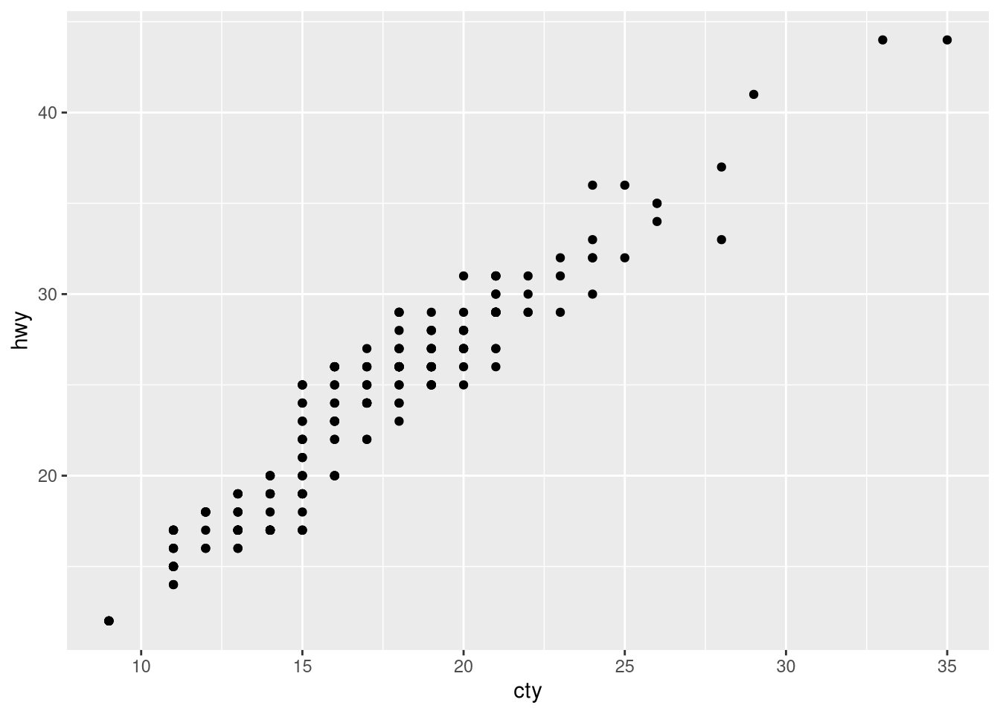
ggsave("mpg-plot.pdf")Saving 7 x 5 in image1.7 Common problems
Writing code that works on first try takes practice and consideration. Mostly something won’t work. Be patient and read your code line by line. Check the documentation. In the beginning especially the code examples for the functions. Also the web search, or LLM can be of good help, if you’re stuck.
1.8 Summary
I’ve made my first scatterplot, that would be ready to publish. With labels, shapes and colorblind coloring.
I learned the basics of ggplot(). How it makes up plots of different layers and how to control those elements, by either “setting” them directly, or “mapping” them to express values of a variable.
I learned several plots to visualize different relationships, for example, two numeric variables, one categorical and one numeric and such.
So i also learned about the distinction between those variable types.
In the end I learned to save a plot and how to troubleshoot my code a bit.